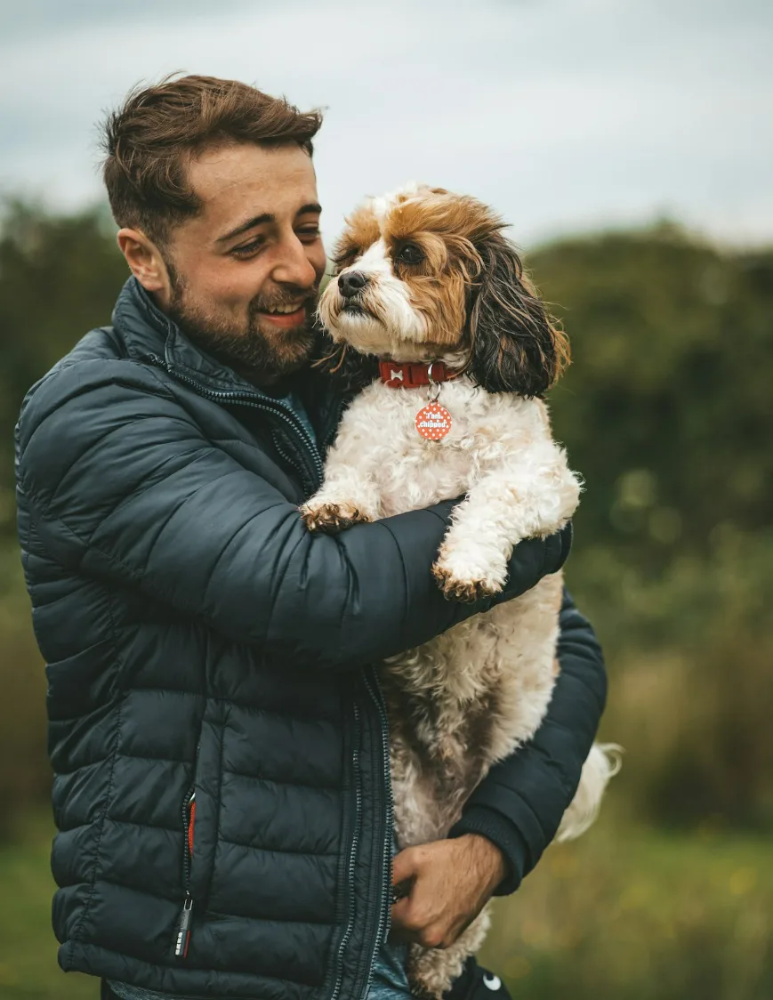
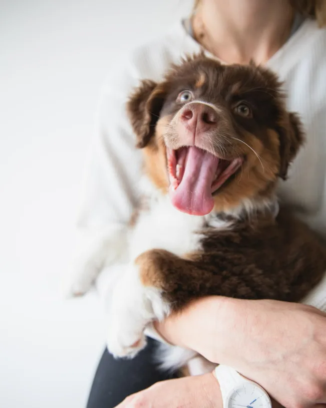
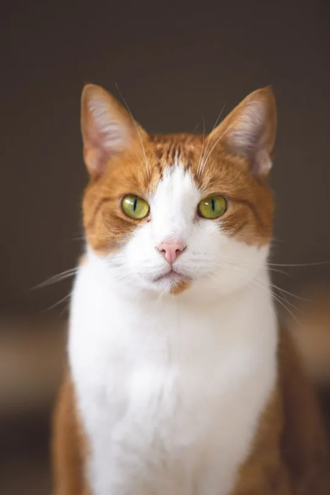

Dr. Maren Ilsley
DVM · Internal medicine
About the practice
Harbor Paws opened on Wharf Road in 2011 with two exam rooms and a borrowed ultrasound. The building has grown. The way we practise has not changed.
Most of what goes wrong with a dog or a cat is caught early by someone who knows them. That is the whole argument for a practice like this one: the same faces, the same building, and enough time in the room to actually look.

DVM · Internal medicine · Founded the practice, 2011
Started Harbor Paws after a decade in a referral hospital, on the theory that most families would rather not be referred anywhere. Takes the difficult dental cases other practices send on, and still runs a Tuesday afternoon of routine wellness appointments because that is where the interesting problems turn up first.
DVM · Internal medicine
VMD · Surgery
DVM · Emergency
Pet parents
They called me the next morning to ask how she slept. I had not even thought to ask.
Walked in at 2am with a limping spaniel. Saw a vet in ten minutes, not a triage queue.

Dan M.Dog parent, two spanielsThe plan came by email before I got home. First vet who has ever done that.

Aoife R.Cat parent, two rescues